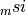
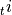

Adding New Imperfection Files¶
The recommended format to include a new imperfection in the database is
using the “

 ” format, and how to obtain these
files is explained in here.
” format, and how to obtain these
files is explained in here.
Once they are obtained the analyst must add to the folder:
desicos/conecylDB/files/database/name
where database is one of the databases included in the:
desicos/conecylDB/databases.json
and name is the name of this imperfection, e.g. based on existing
ones:
degenhardt_2010_z15
zimmermann_1992_z33
Then the analyst must add a cone / cylinder in the:
desicos/conecylDB/ccs.py
file pointing the new imperfections and telling which database it belongs to. The next sub-sections explain this procedure for mid-suface and thickness imperfections.
Mid-Surface Imperfections (MSI)¶
They come with the sufix  and the final name using the
new “ ” format will be:
desicos/conecylDB/files/database/name_msi_theta_z_imp.txt
or, using the old “
 ” format:
” format:
desicos/conecylDB/files/database/name_msi.txt
The new entry in the ccs.py file should have a msi key poiting
the new imperfection and a database key telling which
database it belongs to, for example:
'zimmermann_1992_z33': {
...
'msi': 'zimmermann_1992_z33',
'database': 'dlr',
...
},
Thickness Imperfections (TI)¶
They come with the sufix  and the final name using the
new “  ” format will be:
” format will be:
desicos/conecylDB/files/database/name_ti_theta_z_imp.txt
or, using the old “ ” format:
desicos/conecylDB/files/database/name_ti.txt
The new entry in the ccs.py file should have a ti key poiting
the new imperfection and a database key telling which
database it belongs to, for example:
'degenhardt_2010_z15': {
...
'ti': 'degenhardt_2010_z15',
'database': 'dlr',
...
},